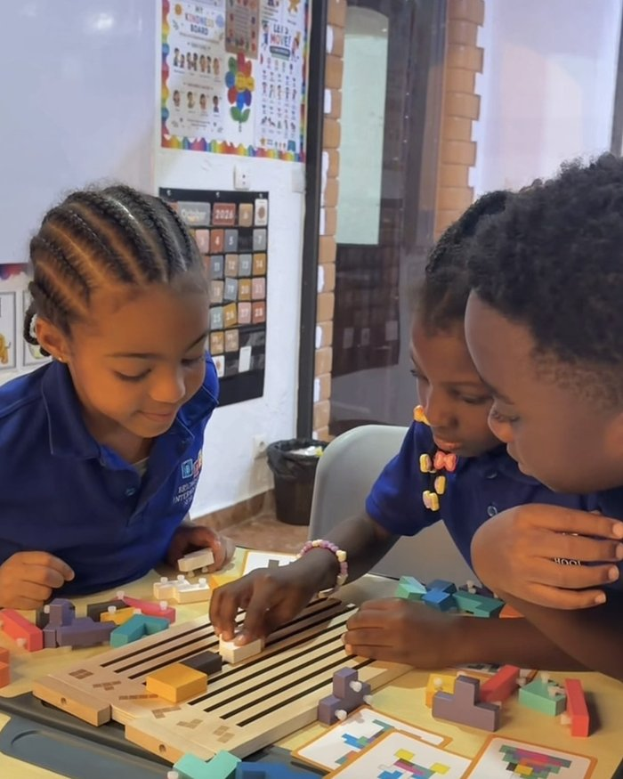
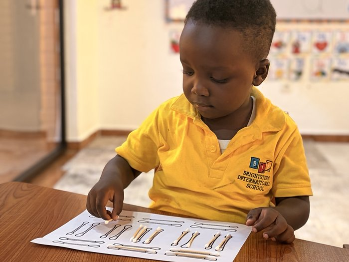
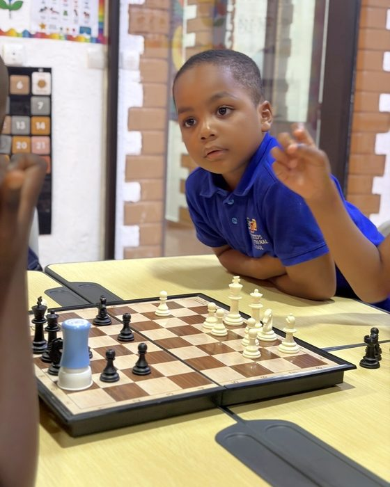
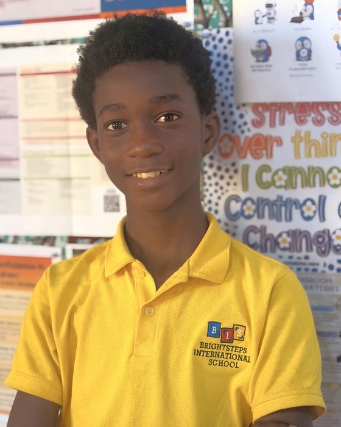
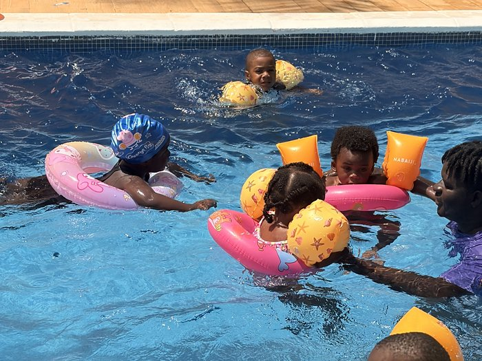

Approche Académique
Un apprentissage porté par la curiosité
L'éducation devrait faire plus qu'enseigner des faits. Elle doit inspirer les élèves à poser des questions, explorer des idées et découvrir leur propre potentiel.

La conception de notre programme
Notre programme allie une approche fondée sur l'investigation à la clarté et à la rigueur de normes académiques exigeantes. Cette combinaison aide les élèves à développer de solides compétences en lecture, en mathématiques et en pensée critique, tout en cultivant la créativité, l'autonomie et une perspective mondiale.
L'anglais est notre principale langue d'enseignement, et le français est introduit dès le plus jeune âge pour favoriser la communication et la compréhension interculturelle. Nous respectons le parcours unique de chaque élève grâce à un accompagnement personnalisé et un état d'esprit tourné vers la croissance et la persévérance.
Comment l'investigation se vit en classe
Chaque unité suit le même cycle : les élèves apprennent non seulement quoi penser, mais aussi comment chercher et découvrir.
- 1
S'interroger
Les élèves partent d'une vraie question sur le monde qui les entoure.
- 2
Explorer
Ils mènent l'enquête par la lecture, les activités pratiques et l'échange.
- 3
Créer
Ils montrent ce qu'ils ont appris en fabriquant, en écrivant ou en construisant.
- 4
Réfléchir
Ils reviennent sur ce qui a fonctionné, ce qui les a surpris et ce qu'ils changeraient.
- 5
Agir
Ils mettent leurs apprentissages au service de la classe, de la famille ou de la communauté.
Apprendre à chaque étape

Petite Enfance
Les élèves de Petite, Moyenne et Grande Section apprennent par le jeu, l'exploration et la découverte dans un environnement chaleureux et sécurisant. L'anglais s'intègre naturellement aux routines quotidiennes, à travers les histoires, les chansons et les interactions.

Primaire
Du CP au CM2, les élèves construisent des bases solides en littératie et en mathématiques, et découvrent les Sciences et les Sciences Sociales à travers nos Unités de recherche (Units of Inquiry), tout en renforçant leur communication, leur collaboration et leur capacité à résoudre des problèmes.

Collège
En 6e et 5e, les élèves approfondissent leurs connaissances dans toutes les matières tout en développant la confiance, le caractère et l'autonomie nécessaires pour réussir au lycée et au-delà.

Au-delà de la classe
La natation et la musique font partie du programme
En plus des Arts, de l'Éducation Physique et de la Technologie, chaque élève pratique la natation et la musique.
Dans la piscine du campus, les élèves gagnent en confiance dans l'eau et apprennent les règles de sécurité, accompagnés de près par un adulte. En musique, ils découvrent le rythme, le chant et les instruments, dont les tambours traditionnels.